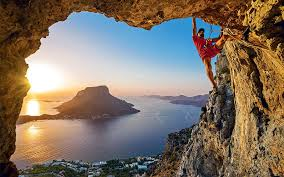

Η Κάλυμνος έχει επάξια καθιερωθεί ως ένας από τους σημαντικότερους αναρριχητικούς προορισμούς στον κόσμο.
Η άριστη ποιότητα και η ποικιλομορφία των βράχων, η εύκολη και ολιγόλεπτη πρόσβαση στα αναρριχητικά πεδία, η διακριτική σήμανση των αφετηριών που οδηγούν στα αναρριχητικά πεδία, η εγγύτητα μεταξύ των πεδίων, οι διαδρομές μέσα στην ενδοχώρα με θέα στις πεντακάθαρες ακτές και την κρυστάλλινη θάλασσα του Αιγαίου, και φυσικά οι ήπιες κλιματολογικές συνθήκες που επικρατούν στο νησί καθ’ όλη τη διάρκεια του έτους, καθιστούν την Κάλυμνο πόλο έλξης για χιλιάδες αναρριχητές από όλο τον κόσμο.

Αναρριχητές που έχουν ταξιδέψει και σε άλλες σπουδαίες αναρριχητικές τοποθεσίες αναφέρουν ότι ο βράχος της Καλύμνου μοιάζει με αυτόν της Ταϊλάνδης, παρόλα αυτά η Κάλυμνος υπερτερεί συνολικά ως εμπειρία και κρίνεται ως πληρέστερος προορισμός.



Η αναρρίχηση στην Κάλυμνο ξεκίνησε στα τέλη της δεκαετίας του ‘90, με την επίσκεψη φημισμένων Ιταλών αναρριχητών οι οποίοι έκαναν τις διακοπές τους στο νησί. Το έμπειρο μάτι τους είδε τις απεριόριστες δυνατότητες που υπήρχαν για την ανάπτυξη της αναρρίχησης στους καλύμνικους βράχους και έτσι αποφάσισαν να επιστρέψουν το συντομότερο δυνατό για να ανοίξουν διαδρομές. Η διάνοιξη των πρώτων διαδρομών ήταν κάπως περιπετειώδης, καθώς οι Καλύμνιοι, έχοντας τότε άγνοια του αντικειμένου, πίστεψαν ότι οι άνθρωποι αυτοί είχαν ως σκοπό να κλέψουν τα πετρώματα και τους σταλακτίτες της Καλύμνου και έτσι τους συνέλαβαν.
Σήμερα φυσικά, η αντιμετώπιση και η εικόνα είναι εντελώς διαφορετική, καθώς οι αρχές και ο Δήμος της Καλύμνου υποστηρίζουν την οργάνωση και την αξιοποίηση αυτών των βραχωδών περιοχών. Αξίζει να σημειωθεί ότι μόνο ένα 6% της ορεινής φυσιογνωμίας του νησιού έχει αξιοποιηθεί εώς τώρα. Ακόμα και αυτό το μικρό ποσοστό των βράχων που έχει αξιοποιηθεί αναρριχητικά όμως, προσφέρει δυνατότητες για τη διάνοιξη αναρίθμητων νέων διαδρομών. Στην Κάλυμνο υπάρχουν πολλοί λόφοι, από 10 έως 200 μέτρα, που προσφέρονται για νέες διαδρομές πέρα από τις γνωστές και ήδη υπάρχουσες.
Η πλειοψηφία των διαδρομών βρίσκεται στο δυτικό/ βορειοδυτικό τμήμα του νησιού, ενώ για τη διάνοιξη των διαδρομών χρησιμοποιούνται σύγχρονα ανοξείδωτα υλικά, στα οποία γίνεται τακτικά συντήρηση. Οι περισσότερες διαδρομές είναι καλά ασφαλισμένες με βύσματα και οι κορυφές τους είναι εξοπλισμένες με αλεξικέραυνα. Το σύστημα αξιολόγησης είναι το Γαλλικό, και έχει επιλεγεί μιας και είναι το συχνότερα χρησιμοποιούμενο στον κόσμο και -κατά γενική ομολογία- το πιο αντικειμενικό. Οι βαθμοί δυσκολίας ξεκινούν από 4c για τις εκπαιδευτικές διαδρομές και φτάνουν έως και 9c για τους έμπειρους αναρριχητές.
Εως τώρα έχουν διανοιχθεί και παραδοθεί περίπου 60 πεδία με διαδρομές αθλητικής αναρρίχησης, που είναι κυρίως ‘μιας σχοινιάς’, δυσκολίας από 4 έως 9 βαθμών και εύκολα προσβάσιμες από μονοπάτια. Οι περισσότερες διαδρομές της ‘μιας σχοινιάς’ κυμαίνονται μεταξύ 20 και 30 μέτρων. Ωστόσο, υπάρχουν και διαδρομές της ‘μιάς σχοινιάς’ που φτάνουν τα 50 - 60 μέτρα. Προς το παρόν σχεδόν όλες οι γνωστές διαδρομές είναι μιας κορυφής, υπάρχουν πάντως εξαιρετικές προοπτικές για διαδρομές των δύο και πέντε κορυφών. Στην Κάλυμνο ανοίγονται περίπου 100-150 νέες διαδρομές κάθε χρόνο απο Έλληνες και ξένους αναρριχητές. Αυτή την στιγμή το νησί έχει πάνω από 1300 οργανωμένες διαδρομές. Επίσης, οι φίλοι των ακόμα πιο παρθένων τοπίων μπορούν να επισκευτούν το νησάκι της Τελένδου, στο οποίοι διανοίγονται όλο και περισσότερες διαδρομές, με έμφαση στις διαδρομές «πολλών σχοινιών» διαφορετικού ύψους.
Όλα τα πεδία της Καλύμνου είναι πλήρως οργανωμένα και απόλυτα ασφαλή, ενώ τα ασβεστολιθικά τους πετρώματα είναι απαράμιλλης ομορφιάς και άριστης ποιότητας. Η εναλλαγή του σκηνικού από τεράστιες κάθετες πλάκες, σε στέγες με σταλακτιτικό διάκοσμο που κόβουν την ανάσα, οι επιβλητικές σπηλιές και η εκπληκτική θέα προς τη θάλασσα, προσφέρει άπειρες δυνατότητες αθλητικής αναρρίχησης με μοναδικές τεχνικές κινήσεις για υψηλές συγκινήσεις και πρωτόγνωρες εμπειρίες.
Το ξηρό κλίμα του νησιού επιτρέπει την ορειβασία και την αναρρίχηση σχεδόν καθόλη τη διάρκεια του έτους. Ακόμα και το καλοκαίρι υπάρχουν σκιερές και δροσερές κορυφές, ενώ η θαλασσινή αύρα ανακουφίζει τον αναρριχητή. Οι καλύτερες εποχές για ορειβασία βέβαια είναι η άνοιξη και το φθινόπωρο, καθώς περά από τις πιο ήπιες κλιματικές συνθήκες, αυτές τις εποχές οι επισκέπτες απολαμβάνουν πλήρη εξυπηρέτηση όσον αφορά τον τουρισμό.
Πριν απο 10 χρόνια διοργανώθηκε για πρώτη φορά στο νησί ένα φεστιβάλ αναρρίχησης, το Kalymnos Rock Climbing Festival. Το φεστιβάλ αυτό σταδιακά εδραιώνεται στην παγκόσμια ατζέντα της αναρρίχησης, και κάθε χρονιά προσελκύει όλο και περισσότερους επισκέπτες αναρριχητές από όλο τον κόσμο.
Επίσης, οι αρχάριοι και επίδοξοι αναρριχητές μπορούν να πάρουν μια πρώτη γεύση απο αυτό το όμορφο άθλημα στην κλειστή πίστα αναρρίχησης, η οποία τέθηκε σε λειτουργία το 2010.